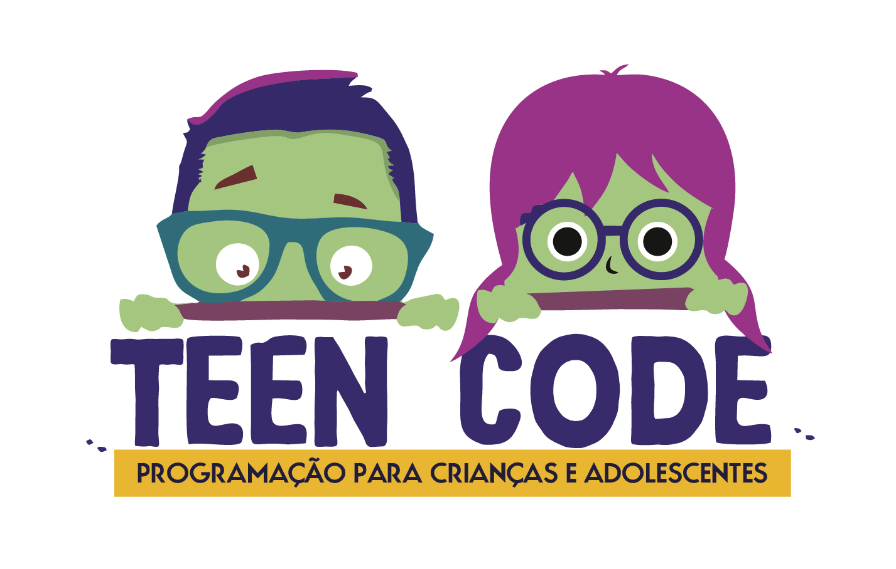

Scratch Basico e Scratch Avançado
O Este curso faz uma introdução à ciência da computação usando a programação baseada em blocos, chamada Scratch. O curso foca em event listeners, loops, condicionais, entrada do usuário, coordenadas cartesianas, variáveis e transmissão de mensagem. Exercitamos bastante o raciocínio lógico, resolução de problemas e criatividade
Após concluir o curso de SCRATCH BÁSICO, nós avançamos ainda mais em programação. Aqui no Scratch Avançado o estudante aprende sobre c ondicionais complexas, clonagem, strings, operadores matemáticos, listas e funções. Após concluir este curso o estudante terá aptidão total no Scratch e estará pronto para avançar ao PYTHON BÁSICO.
Mais tarde o aluno poderá adentrar em novos uiversos da area da Programação como por exemplo:
PYTHON BÁSICO

Os estudantes aprendem o início da programação em Python. Os fundamentos da linguagem nesse curso passam por: loops, variáveis, funções, condicionais e event listeners. Ao final do curso os estudantes conseguem construir alguns jogos iniciais em Python. É indicado para crianças e adolescentes, a partir dos 11 anos de idade. Mas isto não é uma Regra podendo ser interressante para todas as idades!!!
PYTHON INTERMEDIARIO
Vamos mais a fundo nos fundamentos da programação em Python, como loops, variáveis, condicionais e funções, enquanto introduzimos tópicos mais avançados como listas, sets, dicionários e checagem de erros. Os estudantes, aula após aula, praticam todos esses fundamentos construindo projetos complexos baseados em problemas reais.
PYTHON AVANÇADO

É feita a revisão dos fundamentos de Python e foca em avançados tópicos como: recursão, pesquisa e algoritmos de classificação. Aqui introduzimos os alunos na área de Data Science. Os estudantes desenvolvem algoritmos para solucionar problemas reais e que estarão sujeitos a testes rigorosos de qualidade,mas que nossos alunos com certeza passarão com muita tranquilidade!!!